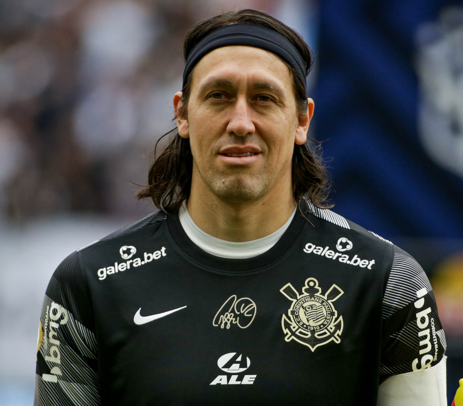

O Sport Club Corinthians Paulista, conhecido popularmente como Corinthians, é um dos clubes de futebol mais tradicionais e populares do Brasil. Fundado em 1º de setembro de 1910, o Corinthians tem uma rica história no futebol nacional e internacional. O clube, sediado na cidade de São Paulo, é amplamente reconhecido por sua imensa torcida, uma das maiores e mais apaixonadas do país.
Time Campeão Paulista 1913
Desde sua fundação, o Corinthians tem se destacado por suas conquistas e por sua influência no cenário esportivo. O clube já venceu diversos campeonatos estaduais e nacionais, incluindo o Campeonato Brasileiro, a Copa do Brasil e a Copa Libertadores da América. Além disso, o Corinthians conquistou o Mundial de Clubes da FIFA, solidificando sua posição como uma potência do futebol global.
O Corinthians é conhecido por sua forte identidade e por ser um símbolo da cultura paulistana e brasileira. Com uma rica tradição de rivalidades intensas, especialmente no clássico contra o Palmeiras, o clube tem uma presença marcante não apenas dentro de campo, mas também na vida cultural e social de São Paulo.
O estádio do Corinthians, a Arena Corinthians, é um dos mais modernos e imponentes do Brasil, e foi um dos palcos da Copa do Mundo FIFA 2014. A paixão dos corinthianos, a história gloriosa e a constante busca por excelência fazem do Corinthians um ícone do futebol e um verdadeiro patrimônio do esporte.
História
Fundação e Primeiros Anos
O Sport Club Corinthians Paulista foi fundado em 1º de setembro de 1910 por um grupo de operários e jovens da classe trabalhadora em São Paulo. O clube começou suas atividades com uma equipe de futebol amador e rapidamente se destacou no cenário esportivo local. O nome "Corinthians" foi inspirado em um time inglês de mesmo nome, que os fundadores admiravam.
Símbolo de Fundação do Corinthians
Nos primeiros anos, o Corinthians enfrentou diversos desafios, mas também conquistou seus primeiros títulos e estabeleceu sua presença no futebol paulista. O clube se tornou conhecido por seu estilo de jogo combativo e pela lealdade de sua crescente torcida.
Anos de Ouro
As décadas de 1950 e 1960 são lembradas como os "Anos de Ouro" do Corinthians, período em que o clube alcançou conquistas significativas e se firmou como uma das principais forças do futebol brasileiro. Durante essas décadas, o Corinthians venceu diversos campeonatos paulistas, solidificando sua posição de destaque.
Esquadrão Imortal
A equipe contava com jogadores icônicos e um estilo de jogo que encantou a torcida. Esses anos também foram marcados por rivalidades intensas e partidas memoráveis, que ajudaram a cimentar o lugar do Corinthians na história do futebol.
Era Moderna
A partir do ano 2000, o Corinthians entrou em uma nova era de sucesso e modernização. Em 2000, o clube conquistou sua primeira Copa Libertadores da América, um marco significativo em sua trajetória. Essa vitória na competição sul-americana foi um passo importante para o time no cenário internacional.
Em 2012, o Corinthians alcançou um feito ainda maior ao vencer a Copa Libertadores pela segunda vez. Esse título consolidou o clube como uma força global e culminou na conquista do Mundial de Clubes da FIFA no mesmo ano, após derrotar o Chelsea na final.
A construção da Arena Corinthians, inaugurada em 2014, simbolizou a modernização das infraestruturas do clube, servindo como um dos principais estádios da Copa do Mundo FIFA 2014. A era moderna do Corinthians é caracterizada por sucessos contínuos e uma base de fãs cada vez maior e mais engajada.
Assista ao vídeo especial do Mundial de 2012 da CorinthiansTV:
Títulos
Títulos Nacionais
O Sport Club Corinthians Paulista conquistou diversos títulos nacionais ao longo de sua história. Entre os principais títulos nacionais estão:
No cenário internacional, o Corinthians também alcançou conquistas significativas, incluindo:
Título
Número de Títulos
Anos
Copa Libertadores
2
2012, 2015
Copa do Mundo de Clubes da FIFA
2
2000, 2012
Recopa Sul-Americana
1
2013
Estádio
Arena Corinthians
A Arena Corinthians, também conhecida como Arena do Corinthians, é o estádio atual do Sport Club Corinthians Paulista. Localizada no bairro de Itaquera, na zona leste de São Paulo, a Arena Corinthians é um dos estádios mais modernos do Brasil.
Arena Corinthians
Localização: Itaquera, São Paulo, Brasil.
Capacidade: Aproximadamente 49.000 espectadores.
Inauguração: 18 de maio de 2014.
A Arena Corinthians foi um dos principais estádios da Copa do Mundo FIFA 2014, recebendo jogos de grupos e a abertura da competição. O estádio é conhecido por seu design moderno e pela infraestrutura de alta qualidade.
Estádio Anterior
O estádio anterior ao atual foi o Estádio do Pacaembu, que foi a casa do Corinthians por várias décadas.
Estádio Pacaembu
Nome: Estádio do Pacaembu.
Localização: Pacaembu, São Paulo, Brasil.
Capacidade: Aproximadamente 40.502 espectadores.
Inauguração: 27 de março de 1940.
O Estádio do Pacaembu foi um importante palco para o Corinthians antes da inauguração da Arena Corinthians. Foi utilizado para uma série de eventos significativos e continua a ser um local de relevância histórica para o clube e para o futebol paulista.
Jogadores Notáveis
Ídolos Históricos
O Sport Club Corinthians Paulista tem uma rica história de jogadores que se destacaram e se tornaram ídolos para a torcida. Entre os ídolos históricos estão:
Jogador Socrátes
Sócrates: Um dos maiores jogadores da história do clube, Sócrates era conhecido por sua habilidade técnica, visão de jogo e liderança. Ele jogou pelo Corinthians durante os anos 1970 e início dos anos 1980, sendo um dos principais nomes na conquista do Campeonato Paulista de 1977 e 1979.
Jogador Rivellino
Rivelino: Outro grande nome do futebol brasileiro, Rivelino foi um dos principais jogadores do Corinthians na década de 1970. Conhecido por sua habilidade e precisão, ele ajudou o clube a conquistar o Campeonato Paulista em 1977 e 1979.
Jair Rodrigues: Um atacante talentoso, Jair Rodrigues foi parte fundamental da equipe durante a década de 1950, contribuindo para várias vitórias do Corinthians em competições estaduais.
Jogador Wladimir
Wladimir: Conhecido por sua dedicação e longevidade no clube, Wladimir foi um lateral-esquerdo que jogou pelo Corinthians entre 1975 e 1986, sendo um dos pilares da equipe que venceu o Campeonato Paulista em 1977 e 1979.
Jogadores Recentes
Nos últimos anos, o Corinthians teve uma série de jogadores que se destacaram e tiveram papéis importantes nas conquistas recentes do clube. Entre os jogadores recentes notáveis estão:
Jogador Jadson
Jadson: Meia-atacante crucial nas conquistas da Copa Libertadores de 2012 e do Campeonato Brasileiro de 2015, Jadson é conhecido por sua habilidade ofensiva e capacidade de criar jogadas decisivas.

Jogador Cássio
Cássio: Goleiro que se tornou um ícone no Corinthians, Cássio foi fundamental na conquista da Copa Libertadores de 2012 e no Mundial de Clubes da FIFA no mesmo ano. Sua atuação decisiva em momentos importantes solidificou seu status como um dos maiores goleiros da história do clube.
Jogador Paulinho
Paulinho: Meio-campista que se destacou tanto no Corinthians quanto em sua passagem pelo futebol europeu. Paulinho foi um dos principais jogadores na conquista do Campeonato Brasileiro em 2015 e da Recopa Sul-Americana em 2013.
Jogador Ralf
Ralf: Volante que se destacou por sua dedicação e liderança em campo, Ralf foi um componente essencial da equipe campeã da Copa Libertadores em 2012 e do Campeonato Brasileiro em 2015.
Torcida
Fiel Torcida
A torcida do Sport Club Corinthians Paulista é uma das mais apaixonadas e numerosas do Brasil, conhecida como a "Fiel Torcida". A torcida corinthiana é famosa por seu apoio incondicional ao time, tanto em casa quanto fora. Sua presença nas arquibancadas é um dos maiores patrimônios do clube.
A Fiel Torcida é caracterizada por sua lealdade e entusiasmo, frequentemente criando um ambiente elétrico nos jogos. O clube possui um grande número de torcedores que acompanham o time em todos os tipos de competições, desde campeonatos locais até torneios internacionais.
Existem diversas organizações e grupos de torcedores que apoiam o Corinthians. Entre as principais organizadas estão:
Gaviões da Fiel
Gaviões da Fiel: Fundada em 1969, é uma das maiores e mais conhecidas torcidas organizadas do Corinthians. Os Gaviões da Fiel são conhecidos por sua presença marcante nos jogos e pela organização de eventos e manifestações de apoio ao clube.
Camisa 12
Camisa 12: Fundada em 1990, é uma das maiores torcidas organizadas do Corinthians, com uma grande base de membros e uma presença ativa em jogos e eventos.
Tradições e Cânticos
A torcida do Corinthians é conhecida por suas tradições e cânticos, que criam um ambiente vibrante e único nos jogos. Essas tradições são uma parte essencial da identidade do clube e da experiência dos jogos.
Cânticos: Os torcedores corinthianos são famosos por seus cânticos e músicas que entoam durante os jogos. Um dos cânticos mais icônicos é o "Vai Corinthians", que é cantado em uníssono para incentivar o time. Outros cânticos incluem "Eu sou Corinthians" e "Te amo, Corinthians".
Tradições: As tradições da torcida incluem a pintura de rosto com as cores do clube, o uso de camisas e bandeiras personalizadas e a realização de festas e eventos antes e depois dos jogos. Além disso, a torcida frequentemente organiza caravanas para acompanhar o time em jogos fora de casa.
Essas tradições e cânticos não apenas mostram o apoio fervoroso da torcida, mas também ajudam a criar um ambiente de união e entusiasmo entre os torcedores e o time.
Rivalidades
Rivalidades Paulistas
No cenário local, o Corinthians tem rivalidades marcantes com outros clubes de São Paulo. Esses confrontos são conhecidos por sua intensidade e pelo grande número de torcedores envolvidos. As principais rivalidades paulistanas do Corinthians incluem:
Rivalidade Paulistas
São Paulo FC: O confronto entre Corinthians e São Paulo é um dos mais acirrados do futebol paulista. A rivalidade é histórica, com muitos jogos decisivos e momentos marcantes. O São Paulo FC é um dos principais concorrentes do Corinthians em campeonatos estaduais e nacionais.
Palmeiras: O derby Paulista entre Corinthians e Palmeiras é amplamente reconhecido como um dos maiores clássicos do futebol brasileiro. Conhecido como "Paulistão", esse confronto é marcado por uma rivalidade intensa que remonta a décadas. As partidas entre essas duas equipes são sempre altamente esperadas e disputadas.
Santos: Embora não seja tão proeminente atualmente quanto os outros, a rivalidade com o Santos também é notável, especialmente em jogos de competições regionais.
Rivalidades Nacionais
Em nível nacional, o Corinthians também mantém rivalidades significativas com clubes de outras regiões do Brasil. Esses confrontos são frequentemente intensos e refletem a importância dos jogos em competições nacionais. As principais rivalidades nacionais do Corinthians incluem:
Escudo Internacional
Internacional: O clássico entre Corinthians e Internacional é um dos mais tradicionais do futebol brasileiro. A rivalidade é particularmente acirrada devido à história de confrontos decisivos, especialmente ao Corinthians ganhar o Campeonato Brasileiro de 2005, após os jogos serem remarcados após escândalo de manipulação dos jogos do campeonato pela arbitragem.
Escudo Flamengo, Antigo e Atual
Flamengo: O confronto com o Flamengo é marcado por uma rivalidade crescente, especialmente em competições nacionais como o Campeonato Brasileiro e a Copa do Brasil. Ambos os clubes são grandes potências do futebol brasileiro, e os jogos entre eles costumam ser muito esperados.
Escudo do Grêmio
Grêmio: Embora menos intensa que outras rivalidades, o confronto com o Grêmio é significativo, especialmente em competições nacionais e internacionais. As partidas entre esses dois clubes costumam ser bastante disputadas.
Controvérsias
Questões Administrativas
O Sport Club Corinthians Paulista, como qualquer grande clube, enfrentou desafios administrativos ao longo de sua história. No entanto, é importante reconhecer o esforço contínuo do clube para superar essas dificuldades e manter sua posição como uma das maiores instituições do futebol brasileiro.
Desafios Financeiros: O Corinthians enfrentou desafios financeiros significativos, especialmente relacionados à construção da Arena Corinthians, um projeto que visava modernizar a infraestrutura do clube e criar novas oportunidades de receita. Apesar dos desafios iniciais, o clube tem se empenhado em equilibrar suas finanças e assegurar que o estádio se torne um ativo valioso para o futuro. A gestão financeira tem sido uma prioridade, com a implementação de estratégias para reduzir dívidas e aumentar a receita por meio de patrocínios, bilheteira e eventos.
Corinthians e situação financeira conturbada
Questões de Governança: O Corinthians tem trabalhado para melhorar a governança e a transparência. As questões administrativas e de liderança têm sido enfrentadas com seriedade, e o clube tem buscado adotar práticas mais transparentes e eficientes. Reformas na estrutura administrativa e o fortalecimento da comunicação com os torcedores são exemplos das iniciativas que visam garantir uma gestão mais aberta e responsável.
Controvérsias em Campo
No campo de jogo, o Corinthians frequentemente enfrenta controvérsias relacionadas a decisões de arbitragem e situações polêmicas. No entanto, é fundamental lembrar que essas controvérsias são parte do esporte e que o clube sempre busca competir de maneira justa e respeitosa.
Decisões Arbitrais: Embora o Corinthians tenha enfrentado decisões arbitrais controversas, o clube tem procurado manter uma postura digna e profissional. O Corinthians acredita na importância da justiça esportiva e tem colaborado com as autoridades para melhorar os padrões de arbitragem e garantir que as decisões sejam o mais justas possível. A presença ativa em fóruns e discussões sobre arbitragem demonstra o compromisso do clube em buscar soluções para problemas percebidos.
<>
Controvérsias em Jogos Importantes: Em jogos decisivos, as controvérsias podem surgir, mas o Corinthians se esforça para manter o foco na competição e em seu desempenho. O clube continua a investir em sua equipe e em sua infraestrutura para garantir que possa competir em alto nível, independentemente das adversidades. O Corinthians acredita que o verdadeiro espírito esportivo se manifesta na busca pela excelência e no respeito pelos adversários e pelo jogo.
Futuro
Projetos e Planos
O Corinthians está sempre em busca de novos projetos e planos para garantir seu crescimento e sucesso contínuo. O clube tem investido significativamente em várias áreas para fortalecer sua posição no futebol brasileiro e internacional.
Investimentos: O Corinthians tem investido na modernização de sua infraestrutura, incluindo a manutenção e aprimoramento da Arena Corinthians. Além disso, o clube está explorando novas oportunidades de receita através de parcerias estratégicas e acordos de patrocínio. Os investimentos também incluem a ampliação de suas atividades comerciais e a melhoria das operações diárias para garantir uma gestão financeira saudável e sustentável.
Desenvolvimento de Jogadores: O Corinthians está focado no desenvolvimento de talentos jovens através de suas categorias de base. O clube investe em programas de formação e treinamento para promover novos talentos e integrá-los ao time principal. A base do Corinthians é conhecida por produzir jogadores de alta qualidade que frequentemente fazem a transição para o time profissional e contribuem para o sucesso do clube.
Corinthians Campeão da Copinha 2024
Expansão Internacional: O Corinthians também busca expandir sua presença internacionalmente, participando de competições globais e estabelecendo relações com clubes e torcedores fora do Brasil. Esta expansão é parte de uma estratégia para aumentar a visibilidade global do clube e atrair uma base de torcedores mais ampla.
Expectativas
As expectativas para o futuro do Corinthians são altas, tanto em termos de desempenho esportivo quanto de crescimento institucional. O clube e seus torcedores esperam ver o Corinthians continuar a competir no mais alto nível e alcançar novos sucessos.
Competição Nacional: O Corinthians tem como objetivo continuar sendo um dos principais concorrentes no Campeonato Brasileiro e na Copa do Brasil. A equipe busca reforçar seu elenco e manter uma performance consistente para conquistar títulos e fortalecer sua posição no cenário nacional.
Desempenho Internacional: Em termos internacionais, o Corinthians almeja competir de forma destacada na Copa Libertadores e em outras competições continentais. O objetivo é buscar novas conquistas e consolidar a reputação do clube no cenário global.
<>
Fortalecimento da Marca: O clube também espera fortalecer sua marca e aumentar a interação com seus torcedores, tanto no Brasil quanto no exterior. A estratégia inclui iniciativas de marketing, eventos para engajar a torcida e melhorias na experiência do torcedor.